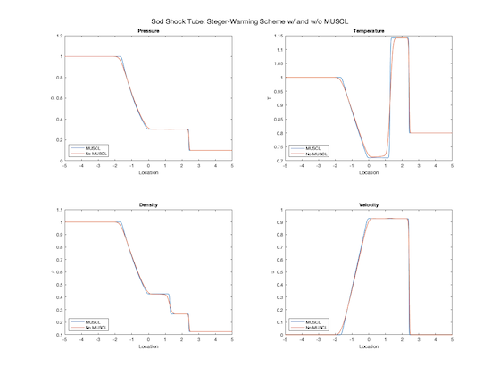
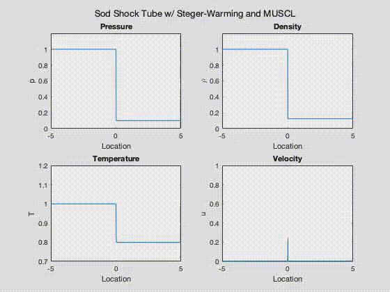

Copyright © Saron Manikam Bhoopathy. All rights reserved.
Introduction
This project aims to solve the famous Sod Shock Tube problem using the Steger-Warming scheme. Two approaches are used, one where the solution at the cell faces are computed using a first-order extrapolation and another using the MUSCL formalism. To access the repository and play with the code yourself, please click here.
A shock tube is a long pipe, which is divided into a driver section and a driven section by a diaphragm [2]. The driver section is pressurized with an inert gas, and the driven section contains the test gas mixture that is under experimental investigation. Following the rupture of the diaphragm, a normal shock develops which propagates into the driven section and is reflected at the end wall. The Sod shock tube problem is a commonly used validation case for fluid dymanics models. The initial conditions for the Sod shock tube problem are such that the driver side is $\lbrack \begin{array}{aligncode} \rho_L \\ P_L \\ u_L \end{array} \rbrack = \lbrack \begin{array}{aligncode} 1.0 \\ 1.0 \\ 0.0 \end{array} \rbrack$ and the driven side is $\lbrack \begin{array}{aligncode} \rho_R \\ P_R \\ u_R \end{array} \rbrack = \lbrack \begin{array}{aligncode} 0.125 \\ 0.1 \\ 0.0 \end{array} \rbrack$.
Figure 1 — Basic schematic of Sod shock tube.
The Steger-Warming scheme is an upwind method for solving compressible Euler and Navier-Stokes equations in high-speed flows [1]. It is a flux vector splitting (FVS) method that splits the fluxes into positive and negative parts in accordance with the propagation of the information. However, some inaccuracies are present in this scheme due to the effect of a fictitious pressue gradient that is developed in the boundary layer, thereby lending to the scheme's first-order accuracy. One remedy is to use the Monotonic Upstream-centered Scheme for Conservation Laws (MUSCL) formalism in conjunction with the Steger-Warming scheme. This improves the model to third-order accuracy.
Methods
The solver code was written in C and the results were analyzed in MATLAB. The code repository can be found here, along with the instructions
Results
The results validate the model developed for this test case. Figure 2 showcases the difference in accuracy between the Steger-Warming scheme using MUSCL and without MUSCL. The effects of the fictitious pressure gradient in the boundary layer can be seen clearly.

Figure 2 — Solution results comparing thermodynamic parameters between the upwind schemes with and without MUSCL.

Figure 3 — Animation of the results from MUSCL formalism showing growth of parameters with time.
Conclusion
This project shows the development of numerical finite difference techniques and their subsequent validation using popular test cases. For any aspiring fluid dynamicists, it is imperative to understand the underlying numerical schemes used in commercial CFD packages. My hope is that this project inspires and guides those who are interested in honing their CFD skills.
References
[1] Drikakis, D., and Tsangaris, S., “On the solution of the compressible navier- stokes equations using improved flux vector splitting methods,” Applied Mathematical Modelling, vol. 17, Jun. 1993, pp. 282–297.
[2] Grogan, K., and Ihme, M., “Stanshock: A gas-dynamic model for shock tube simulations with non-ideal effects and chemical kinetics,” Shock Waves, vol. 30, Jan. 2020, pp. 425–438.